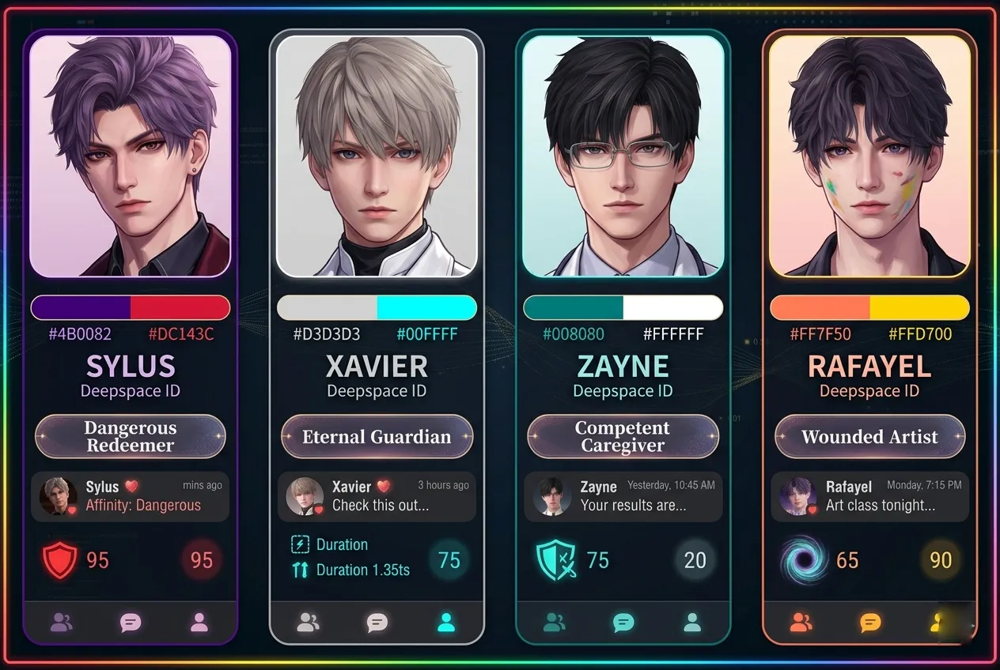
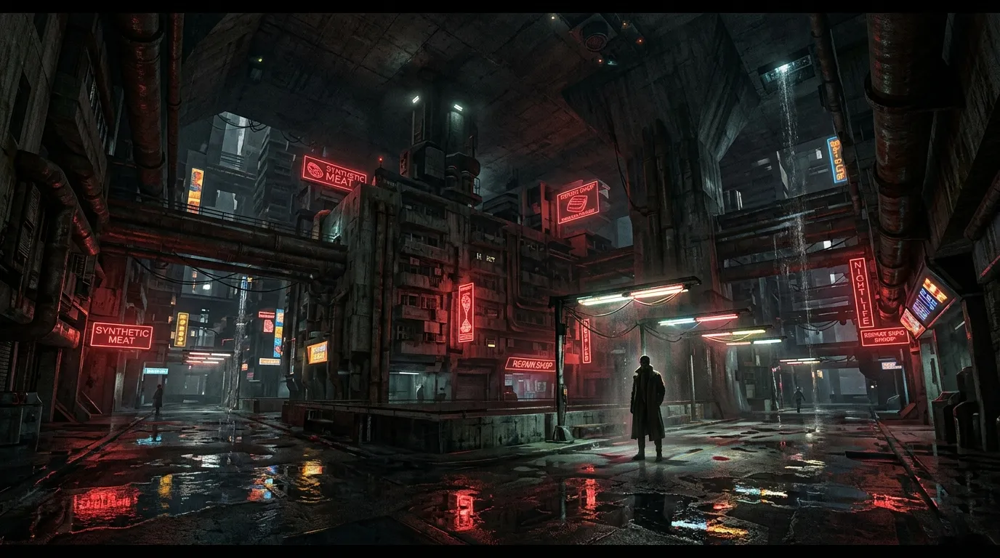
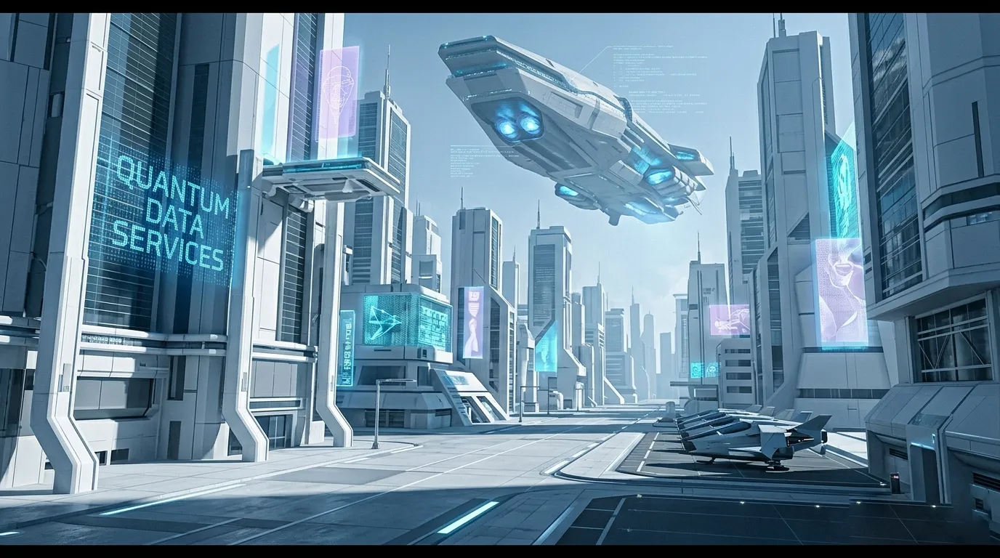
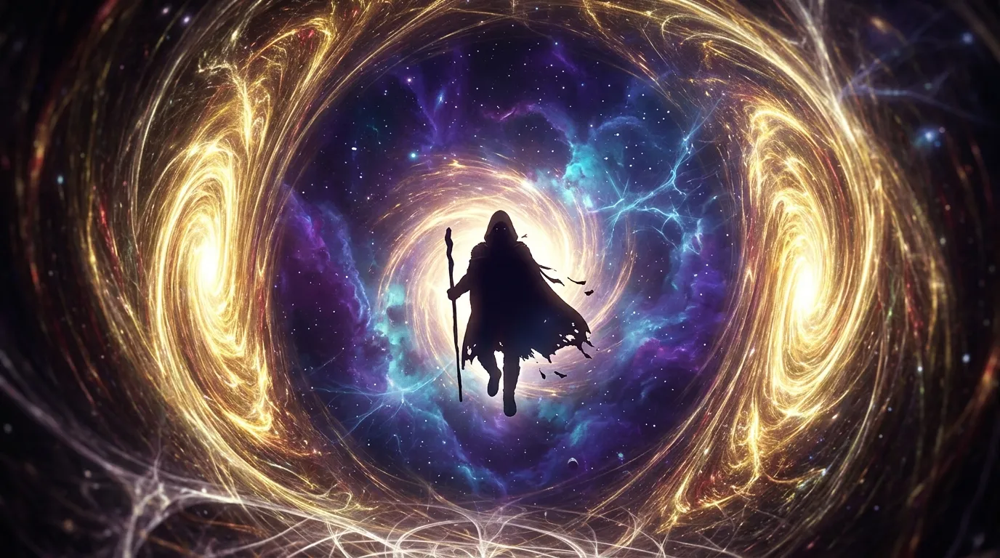
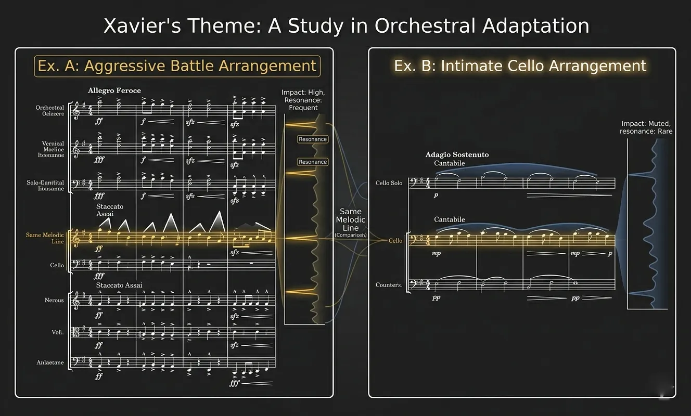
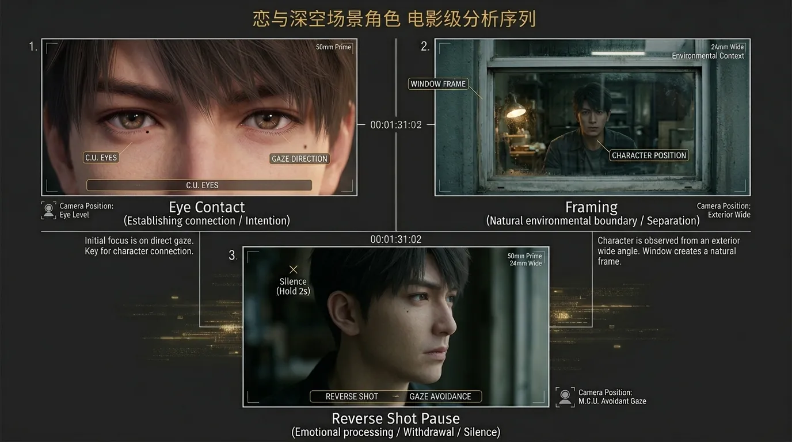
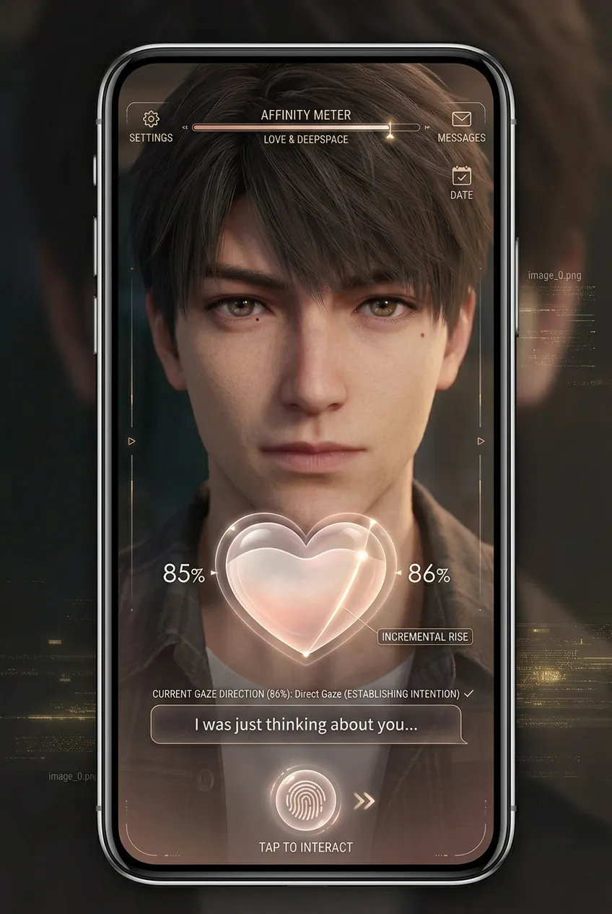
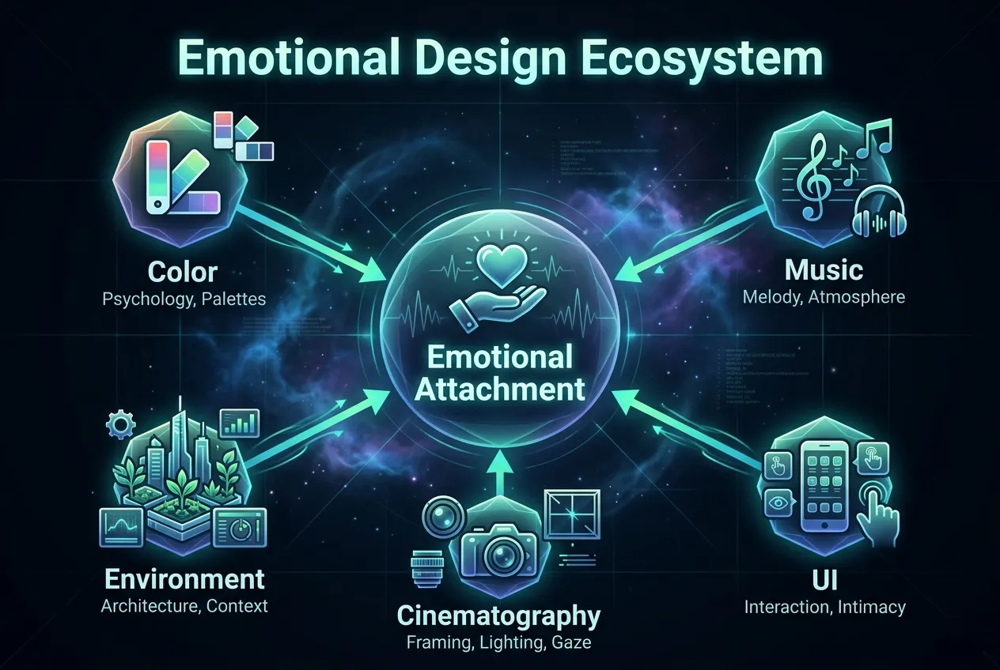

Visual language, color psychology, musical motifs, and cinematic storytelling — how art direction creates emotional immersion.
Love and Deepspace employs a sophisticated color psychology system where each male lead is assigned a dominant chromatic identity. These colors are not arbitrary — they reinforce personality traits, emotional arcs, and narrative roles. The consistency across character design, UI accents, lighting in story scenes, and even text message themes creates a subconscious emotional anchor for the player.
| Character | Primary Color | Hex Code | Psychological Association | Narrative Function |
|---|---|---|---|---|
| Sylus | Blood Red | #8B0000 | Danger, power, passion, sacrifice | Forbidden desire / moral ambiguity |
| Xavier | Solar Gold | #FBBF24 | Hope, eternity, warmth, divinity | Unconditional loyalty / light in darkness |
| Zayne | Ice Blue | #3B82F6 | Calm, competence, emotional distance, healing | Protected vulnerability / the caregiver |
| Rafayel | Mystic Purple | #8B5CF6 | Creativity, melancholy, depth, transformation | Wounded artist / emotional openness |
Sylus — Blood Red. Red is the color of extremes: love and violence, life and death. His visual design uses deep crimsons against black leather and metal. The red appears in his eyes (during Evol activation), the accents on his uniform, and the lighting in N109 Zone cutscenes. Psychologically, red raises heart rate and signals danger — but also passion. The game leverages this tension: you should fear him, yet you want him.
Xavier — Solar Gold. Gold implies rarity, value, and timelessness. Xavier's light-based attacks, his warm blonde hair, and the golden glow of his abilities create an association with the sun — constant, life-giving, distant yet warm. Unlike Sylus's aggressive red, Xavier's gold calms. It signals safety, but also a sadness: gold is the color of fading light at dusk, foreshadowing his centuries of lonely waiting.
Zayne — Ice Blue. Blue is the color of the mind — intellect, control, professionalism. Zayne's blue is cold, clinical, and calming. His white doctor's coat contrasted with icy blue accents suggests sterility and emotional reserve. Yet the warmth of his rare smiles feels more precious because of the surrounding cold. The game uses blue to create "emotional temperature contrast" — the colder the baseline, the warmer the intimacy when it breaks through.
Rafayel — Mystic Purple. Purple blends red (passion) and blue (sadness). It is the color of twilight, of creativity, of royalty in decay. Rafayel's purple water-based abilities, his flowing dark hair, and the melancholic lighting of his studio scenes evoke a sense of beautiful sadness. Purple signals transformation — his identity as a Sea God, his thousand-year wait — and emotional depth that cannot be fully contained.

Figure 1: The chromatic identity of each male lead — red, gold, blue, purple — and how they appear in character design, UI, and environment lighting.
Image description: Four vertical color strips with character portraits, each showing primary color, secondary accent, and a sample UI element (message bubble, icon).
The environments of Love and Deepspace are not just backdrops — they are emotional containers that shape how players feel during key story moments. Three locations exemplify the game's environmental storytelling: N109 Zone, Tianxing City, and the Deepspace Tunnel.
A lawless underground city bathed in red and neon purple. The architecture is brutalist — exposed concrete, rusted metal, flickering lights. But the red lighting gives everything a bloody sheen. This is Sylus's domain: dangerous, alluring, morally gray. The environmental design says: you are not safe here, but you might find something real.
In contrast, Tianxing City is pristine, futuristic, bathed in cool blues and whites. Skyscrapers with clean lines, holographic advertisements, automated everything. It looks like a paradise — but the coldness of the color palette hints at hidden darkness. The Farspace Fleet headquarters here is sterile, militaristic, hiding secrets beneath polished surfaces. The environmental contrast between N109's warm reds and Tianxing's cold blues mirrors the moral ambiguity of the story: the "good" city feels cold, the "bad" zone feels alive.
The tunnel itself is a visual masterpiece: swirling cosmic energies, golden light spilling through dimensional rifts, the silhouette of wanderers emerging from the void. It is simultaneously beautiful and terrifying. The tunnel represents transition — between Earth and the unknown, between safety and danger, between ordinary life and the extraordinary. Its design influences every scene where the protagonist crosses through, amplifying the emotional stakes.

Figure 2: N109 Zone — red-neon brutalist architecture, Sylus's silhouette against flickering lights.
Image description: Dark underground city with red neon signs, exposed pipes, rain-slicked streets, a distant figure in a long coat.

Figure 3: Tianxing City — pristine, cold, blue-tinted futuristic metropolis hiding secrets beneath.
Image description: Wide shot of gleaming white skyscrapers with blue holographic advertisements, clean streets, Farspace Fleet vessel in sky.

Figure 4: The Deepspace Tunnel — swirling golden energy, dimensional rift, silhouette of a wanderer emerging.
Image description: Space scene with a spiraling golden vortex, purple-blue nebula clouds, a dark humanoid shape stepping out of the light.
The soundtrack of Love and Deepspace is not ambient background — it is a structural narrative device. Each character has a leitmotif (a recurring musical theme) that appears in different arrangements depending on the emotional context. This technique, borrowed from film scoring (think John Williams or Howard Shore), creates subconscious emotional conditioning.
| Character | Instrumentation | Key Signature | Emotional Associations |
|---|---|---|---|
| Sylus | Low strings, distorted electric guitar, bass drops | Minor / Phrygian mode | Danger, tension, hidden tenderness |
| Xavier | Piano, strings, soft choir | Major / Lydian | Hope, melancholy, timelessness |
| Zayne | Piano (clean), cello, ambient pads | Minor / Dorian | Control, solitude, warmth beneath ice |
| Rafayel | Flute, harp, water-like synth pads | Minor / Aeolian | Melancholic beauty, longing, transformation |
In his first appearance, the music is aggressive, low-register strings with percussive hits — danger. But in later intimate scenes (e.g., the "cold medicine" moment), the same melodic theme is played softly on a solo cello, stripped of distortion. Your brain recognizes the theme and re-contextualizes it: the danger was always also vulnerability. This is musical storytelling at its finest.
The battle music also shifts dynamically. When you trigger a character's Resonance state, the track modulates to their leitmotif, creating a moment of audiovisual catharsis. This "musical pay-off" reinforces the emotional bond between player and character — the music literally changes because of your actions.

Figure 5: Musical score comparison — Sylus's theme in aggressive battle arrangement (top) vs. intimate cello arrangement (bottom).
Image description: Two musical notation excerpts side by side, one marked "Aggressive" with sharp dynamics, the other marked "Intimate" with softer phrasing.
Love and Deepspace features high-budget CG cutscenes that rival anime films. Their direction follows specific cinematic principles to maximize emotional impact. Let's analyze three key techniques.
In intimate scenes, the camera always focuses on the character's eyes before showing any other feature. Eye contact is the most powerful trigger for empathy in human psychology. By holding on eye close-ups for 2-3 seconds, the game forces emotional connection before the player can build rational defenses.
Characters are often shot through environmental frames (windows, doorways, foliage). This creates a sense of intrusion — the player is peeking into a private moment. It heightens intimacy because the scene feels secret, not performed.
During dialogue, the game often holds on a character's face for one extra beat after they finish speaking. That half-second of silence creates emotional weight — what are they thinking? What aren't they saying? This mimics real human hesitation and makes the characters feel more alive.

Figure 6: Frame-by-frame analysis of a key CG scene — eye close-up, environmental framing, and the reverse shot pause.
Image description: Three-panel storyboard: panel 1 eye close-up, panel 2 character framed through a window, panel 3 silence beat with character looking away.
Even the menus and buttons of Love and Deepspace are designed to evoke emotion. The UI is not merely functional — it is diegetic, meaning it feels like part of the world.

Figure 7: The home screen UI — character-specific color borders, animated affinity heart, and "touch" interaction prompt.
Image description: Smartphone game UI mockup showing a character on the home screen, heart-shaped affinity meter slowly filling, soft purple UI accents for Rafayel.
Love and Deepspace is not a game that tells you to love its characters — it designs you to love them. Every visual, musical, and interactive choice is calibrated to trigger specific emotional responses:
| Design Element | Psychological Trigger | Resulting Emotion |
|---|---|---|
| Color psychology (red/gold/blue/purple) | Subconscious association with archetypes | Pre-attraction / anticipation |
| Leitmotif music system | Pattern recognition + emotional conditioning | Attachment through familiarity |
| CG eye close-ups | Empathy trigger via eye contact | Intimacy without permission |
| Asynchronous SMS with haptics | Intermittent reinforcement (dopamine loop) | Craving / anticipation |
| Environmental contrast (N109 vs Tianxing) | Moral ambiguity framing | Emotional investment in "gray" characters |
| Delayed touch responses | Anthropomorphism (feels human) | Parasocial bond reinforcement |
The aesthetics of Love and Deepspace are not decoration — they are the primary mechanism of emotional storytelling. The plot is important, but the game could have a mediocre story and still create attachment through its art direction alone. That is the power of integrated aesthetic design: it bypasses the rational brain and speaks directly to the emotional core.

Figure 8: The emotional design ecosystem — how color, music, UI, cinematography, and environment synergize to create attachment.
Image description: Central diagram with five interconnected nodes (Color, Music, UI, Cinematography, Environment) all feeding into a central "Emotional Attachment" node.